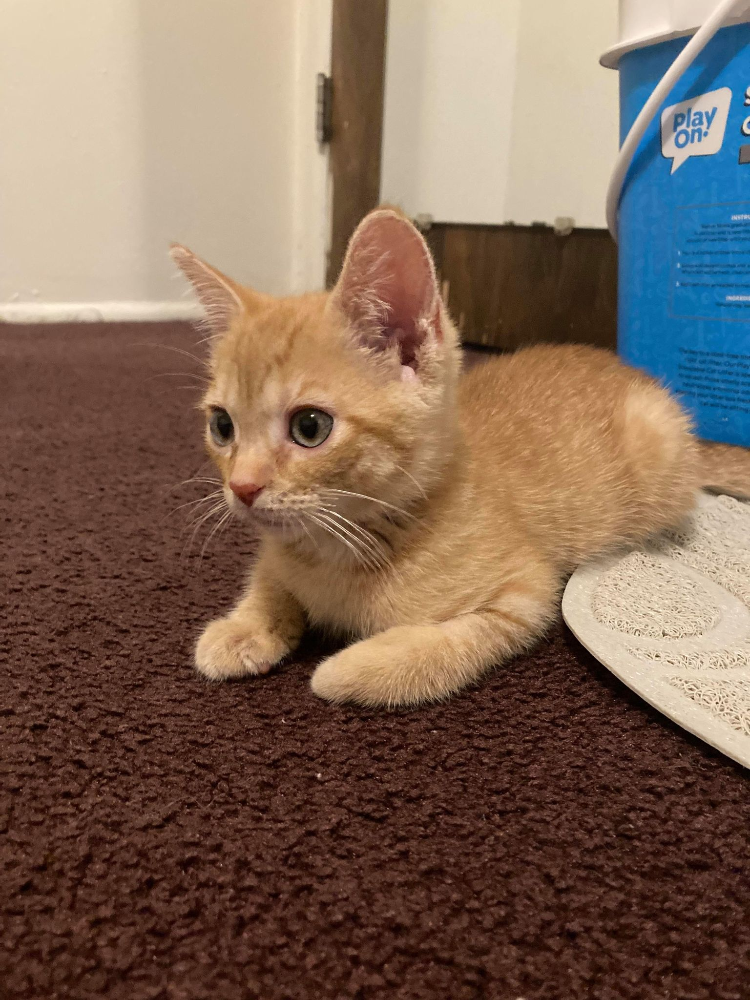
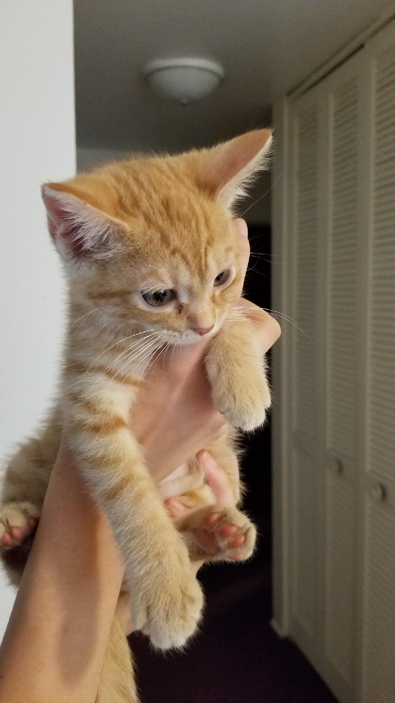
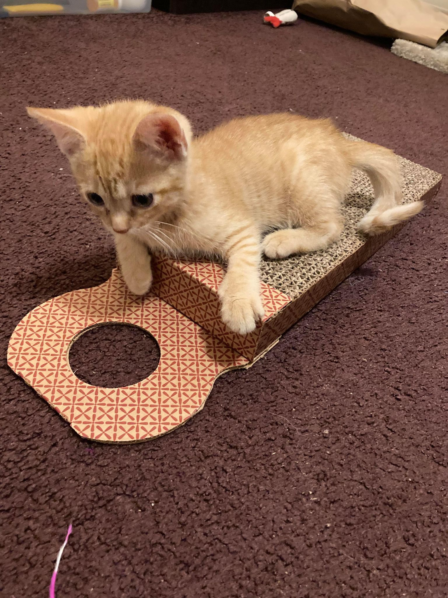
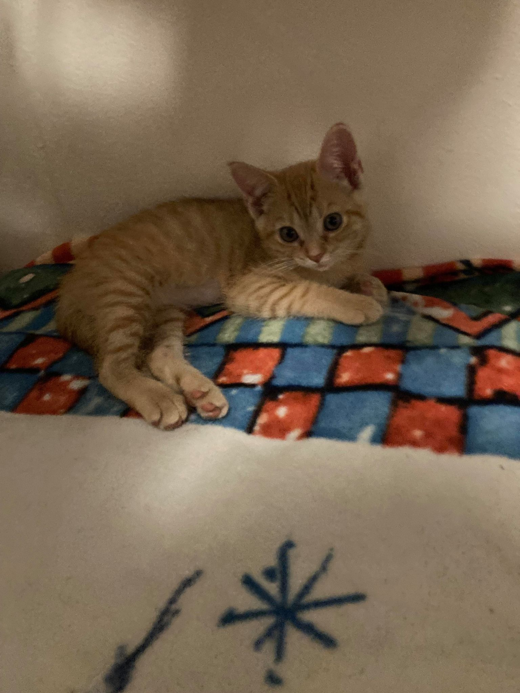
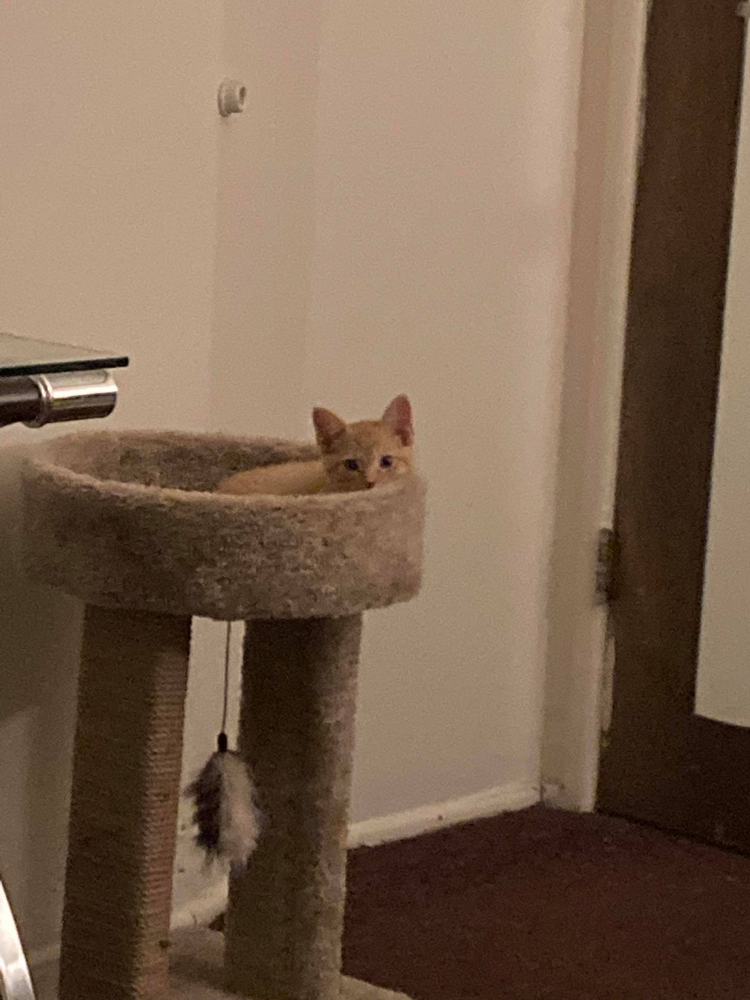
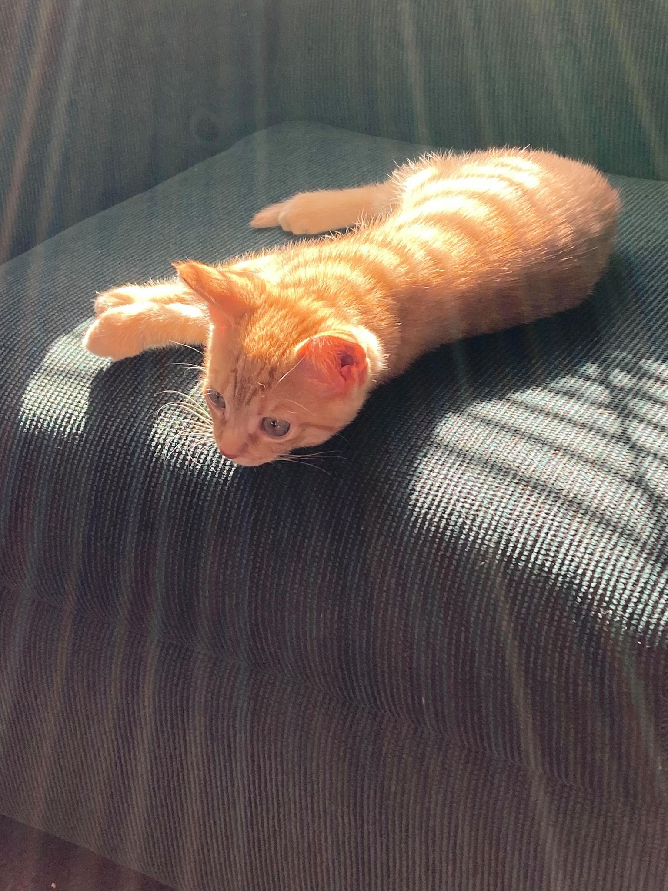
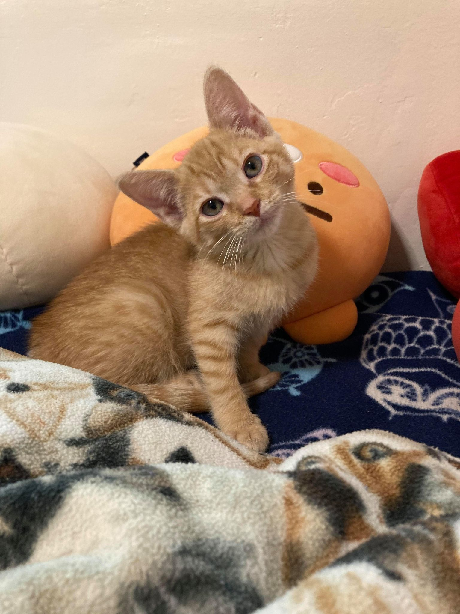
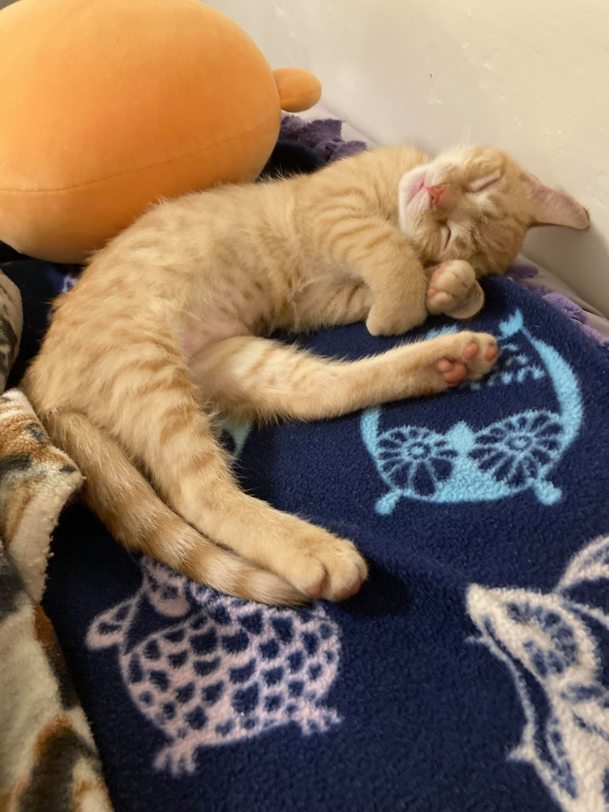
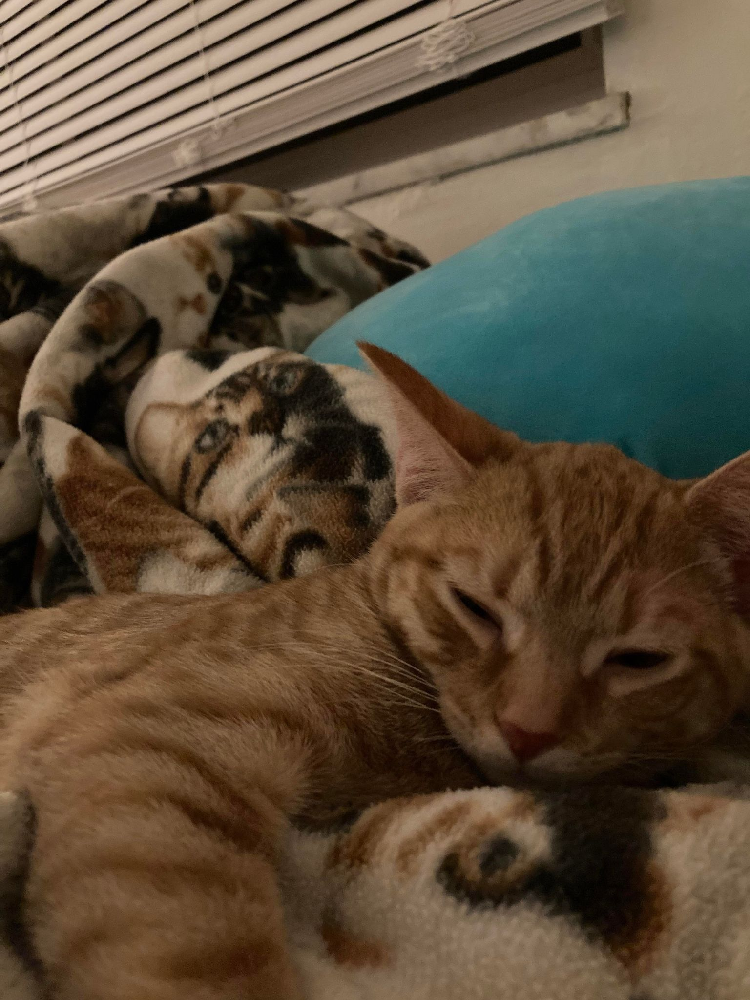

Kumquat has grown so much since we got her back in October 2021. She used to be so small and light! She could be picked up with one hand and weighed less than 2 pounds. However, when she was born she had some brain swelling, which caused her to have balance issues that are still prevalant today. Her head tils, which is very cute, but also indicative that she has some balance issues. She will sometimes fall when she's climbing something, and often falls on her back.
You can actually see her head tilt in one of the photos below. But, her medical problems don't usually interfere with her will to be chaotic and run around the apartment. Here are some pictures of her youth.








